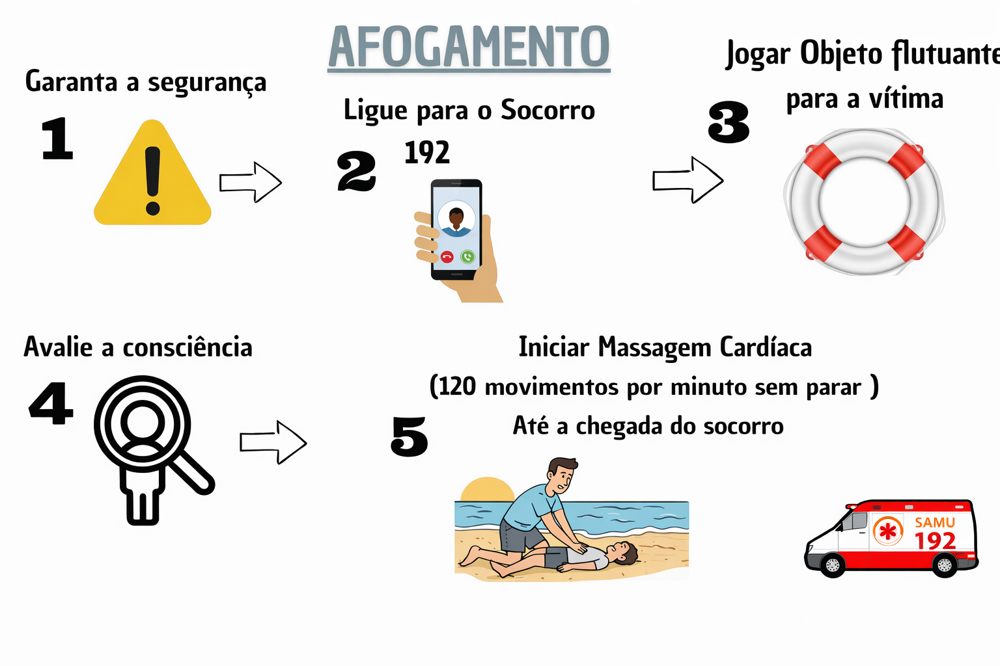

Afogamento — O que fazer

Passos imediatos
- Retire a pessoa da água com segurança (sem colocar-se em risco).
- Verifique se a vítima está consciente e respirando.
- Se a vítima não respira, inicie imediatamente compressões torácicas e ventilação (RCP) se souber como fazer.
- Afaste água da via aérea e abra as vias aéreas; mantenha a vítima aquecida.
- Ligue para o SAMU informando localização e condição da vítima.
Observações
- Mesmo que a vítima pareça recuperar-se, procure atendimento médico — complicações podem surgir mais tarde.
- Se houver suspeita de trauma (queda, pancada), imobilize o pescoço e coluna apenas se você estiver treinado.